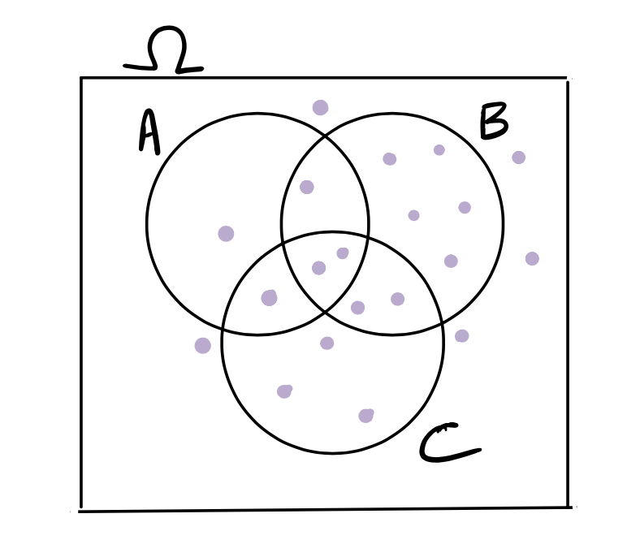

Code
knitr::include_graphics("https://imgs.xkcd.com/comics/prediction.png")
knitr::include_graphics("https://imgs.xkcd.com/comics/prediction.png")
Maybe a bit of discussion here about situations in which two things can happen, but what do they think about the chance of each eg. coin toss, even/odd number on a die roll, winning the lottery vs not winning, getting an A in stat 20 vs not etc.
. . .
. . .
. . .
Let \(\Omega\) be the outcome space, and let \(P(A)\) denote the probability of the event \(A\). Then we have:
. . .
. . .
. . .
Concepts to review: (KEEP THIS BRIEF, OR INCORPORATE INTO CQ’s) - The first two rules of probability - unions and intersections - mutually exclusive events and the addition rule - good idea to draw Venn diagrams here - Use rule 3 to write down the complement rule, and show what A^C means
countdown::countdown(5, top = 0)05:00
Give them five minutes, can use kahoot music
countdown::countdown(1, top = 0)01:00
The Linda problem is from a very famous experiment conducted by Daniel Kahneman and Amos Tversky in 1983 (The version below is from the book Thinking, Fast and Slow by Kahneman, page 156):
Linda is thirty-one years old, single, outspoken, and very bright. She majored in philosophy. As a student, she was deeply concerned with issues of discrimination and social justice, and also participated in antinuclear demonstrations.
Which alternative is more probable?
Linda is a bank teller.
Linda is a bank teller and is active in the feminist movement.
Correct answer: (a) Depending on the response, you can discuss how even though (b) is clearly contained in (a) and therefore has lower probability, an overwhelming majority of their respondents ranked (b) as more likely. “About 85% to 90% of undergraduates at several major universities chose the second option, contrary to logic”, and talk about why this is so. Probability can be tricky and counter-intuitive. If they do well, congratulate them and say that they are among the rare people who understand that \(P(A \textbf{ and } B)\) must be lower than \(P(A)\).
Kahneman, Daniel. Thinking, Fast and Slow (p. 158). Farrar, Straus and Giroux.
We can simulate coin tosses and see if the simulations justify our intuitive understanding of what happens when we toss a fair coin. Go over code and review set.seed() and sample(). Maybe change arguments and see what happens.
Let’s simulate tossing a coin ten times:
set.seed(12345)
coin <- c("Heads", "Tails")
tosses <- sample(coin, 10, replace = TRUE)
data.frame(tosses) %>%
group_by(tosses) %>%
summarise(n = n())# A tibble: 2 × 2
tosses n
<chr> <int>
1 Heads 3
2 Tails 7Comment on the fact that it is not a 50-50 split. DON’T FORGET TO SCROLL DOWN!!
What about if we toss the coin fifty times?
set.seed(12345)
tosses <- sample(coin, 50, replace = TRUE)
data.frame(tosses) %>%
group_by(tosses) %>%
summarise(n = n())# A tibble: 2 × 2
tosses n
<chr> <int>
1 Heads 15
2 Tails 35This doesn’t look so good… Maybe tossing five hundred times will improve the split:
set.seed(12345)
tosses <- sample(coin, 500, replace = TRUE)
data.frame(tosses) %>%
group_by(tosses) %>%
summarise(n = n())# A tibble: 2 × 2
tosses n
<chr> <int>
1 Heads 251
2 Tails 249We see that as the number of tosses increases, the split of heads and tails begins to look closer to 50-50.
Here is a plot of the proportion of tosses that land heads when we toss a coin \(n\) times, where \(n\) varies from \(1\) to \(1000\).
Be sure to explain what they are looking at. We see that at the beginning, for a small number of tosses, the proportion of times that the coin lands heads is all over the place, but it eventually settles down to be around 0.5. This verifies our intuition that if we toss a fair coin, the proportion of times that the coin lands heads should be about 0.5. This idea of the probability of a particular outcome as a long run proportion of times that we see that outcome is called the frequentist theory of probability, and we will be using this theory in our class. (A different theory of probability uses a subjective notion of probability, but we won’t get into that at this time.) We will think about the probability of heads as the long-run relative frequency, or the proportion of times the coin will land heads if we toss it many, many times. This fits with our intuition that if we have a fair coin, that means that each of the two possible outcomes will occur roughly the same number of times when we toss it over and over again. This is the justification for calling the two outcomes equally likely and allowing us to define the probability of heads to be 1/2.
set.seed(12345)
coin1 <- c("H", "T")
toss_num <- 1000 # total number of tosses
tosses <- sample(coin1, size = toss_num, replace = TRUE)
# # simulating tossing a coin 1000 times
prop_heads <- cumsum(tosses == "H") / 1:toss_num
prop_heads <- data.frame(cbind(prop_heads, 1:toss_num))
prop_heads <- rename(prop_heads, toss_num = V2)
# computing the fraction of tosses that land heads for each n and
# making the resultant vector into a data frame and renaming the columns
prop_heads %>%
ggplot(aes(y = prop_heads, x = toss_num)) +
geom_line() +
annotate("segment", x = 0, xend = max(toss_num) + 50, y = 0.5, yend = 0.5,
color = "red", linetype = 2, linewidth = 0.9) +
ylim(c(0,1)) +
xlab("Number of tosses") +
ylab("Proportion of tosses that land heads") +
ggtitle("As we increase the number of tosses, \n the proportion of heads settles at about 50% ")countdown::countdown(1, bottom = 0)01:00
Suppose Ali and Bettina are playing a game, in which Ali tosses a fair coin \(n\) times, and Bettina wins one dollar from Ali if the proportion of heads is less than 0.4. Ali lets Bettina decide if \(n\) is 10 or 100.
Which \(n\) should Bettina choose?
This ties into the plot of proportions of heads as the number of coin tosses increases. Hopefully Bettina realizes she has a better chance of getting the number of heads far away from 0.5 with fewer tosses.
Part 1: Suppose we roll a die 4 times. The chance that we see six (the face with six spots) at least once is given by \(\displaystyle \frac{1}{6} + \frac{1}{6} + \frac{1}{6} + \frac{1}{6} = \frac{4}{6} = \frac{2}{3}\)
True or false?
Part 2: Suppose we roll a pair of dice 24 times. The chance that we see a pair of sixes at least once is given by \(\displaystyle 24 \times \frac{1}{36} = \frac{24}{36} = \frac{2}{3}\)
True or false?
countdown::countdown(2, bottom = 0)02:00
Both parts are false since we are using the addition rule on events that are not mutually exclusive. It is important that you do NOT talk about what the actual probability is since that uses the multiplication rule and we have not discussed that in the notes. This is more an exercise in when not to use the addition rule.
countdown::countdown(1, bottom = 0)01:00
Consider the Venn diagram below, which has 20 possible outcomes in \(\Omega\), depicted by the purple dots. Suppose the dots represent equally likely outcomes. What is the probability of \(A\) or \(B\) or \(C\)? That is, what is \(P(A \cup B \cup C)\)?

Ask them what is the quickest way to do this. Maybe even give them only 15 or 30 seconds.
details in coin-flipping-activity.qmd If running short on time can skip this entirely (move to Th/Fr), or not do the coding. Take the details, and tell them you will post the plot on Ed later.
countdown::countdown(25, top = 0)25:00
countdown::countdown(5, top = 0)05:00
countdown::countdown(50, top = 0)50:00